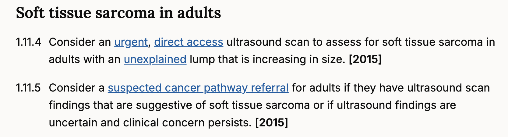
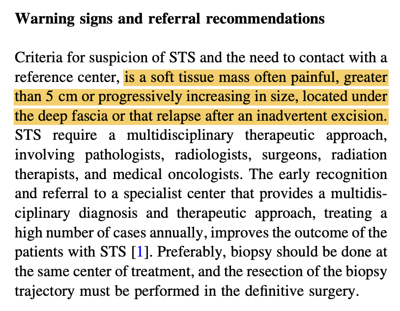
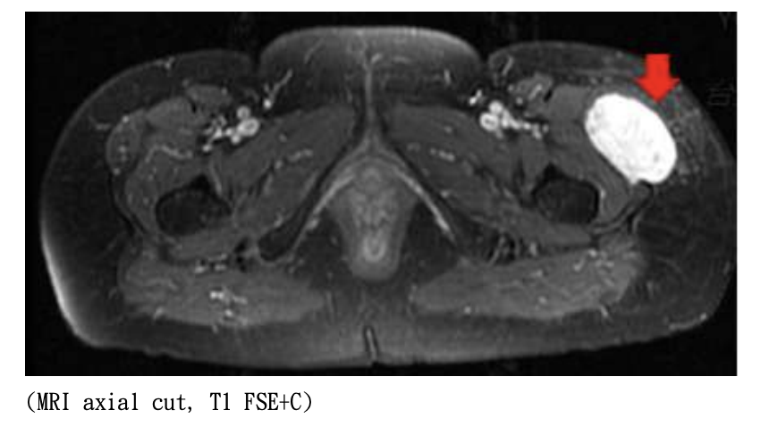
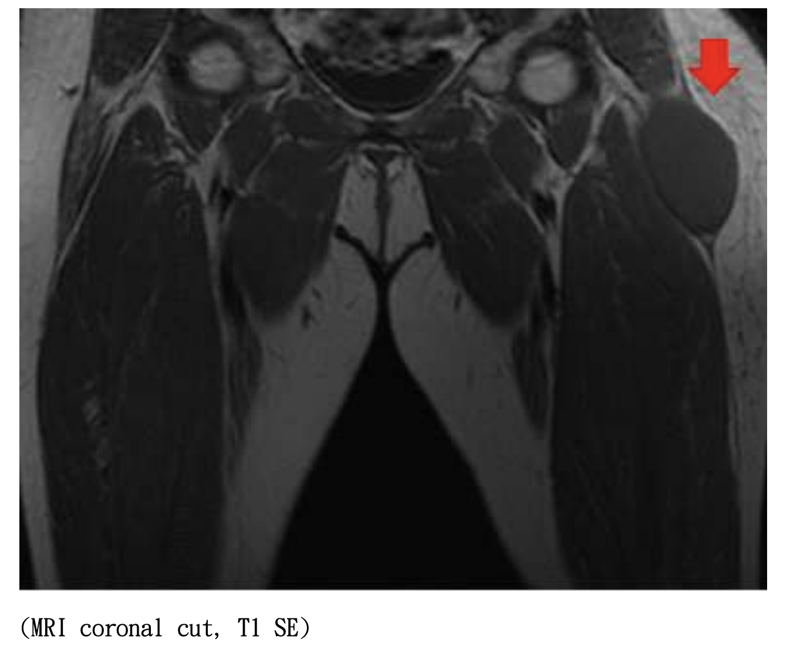
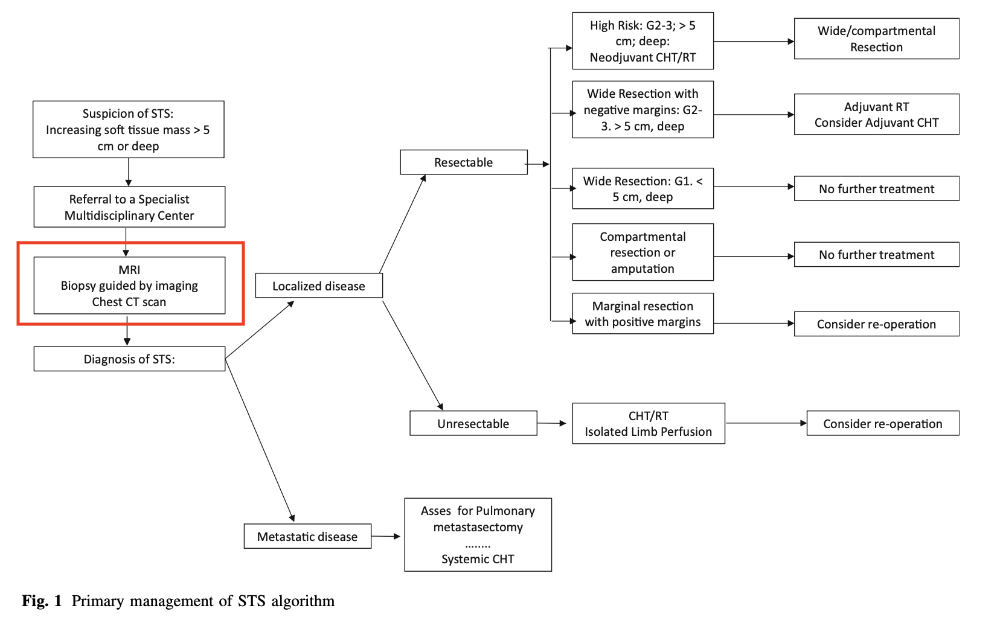
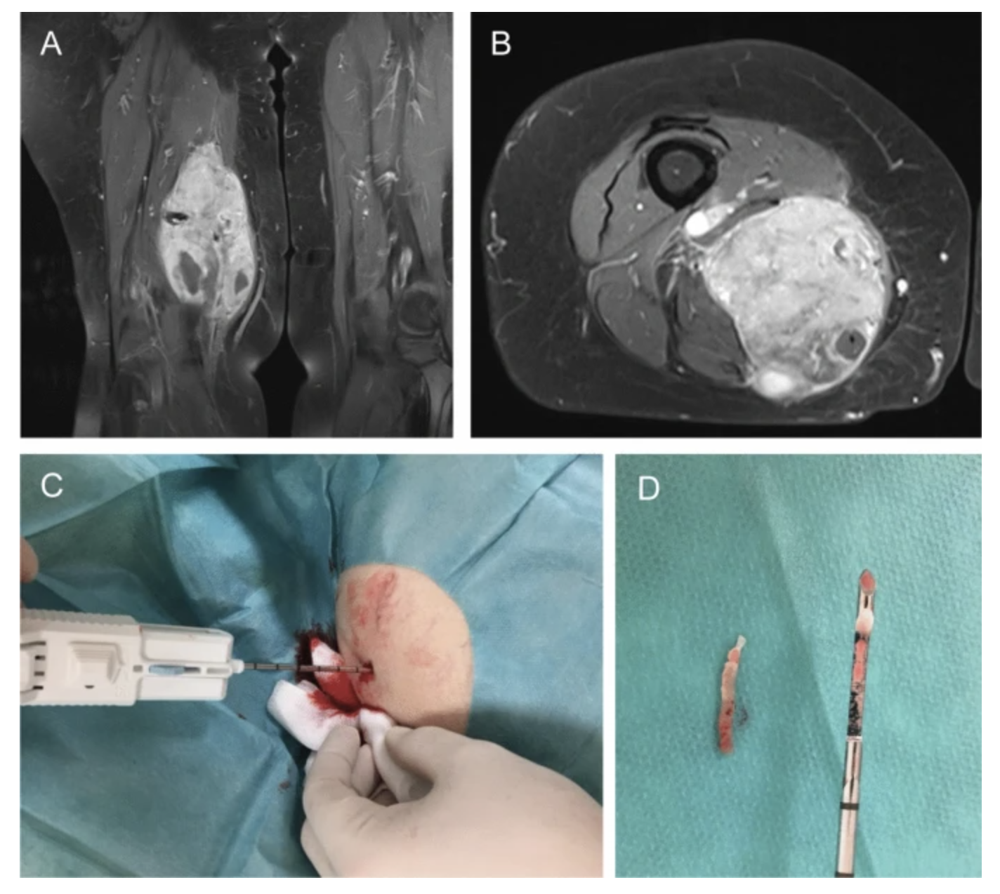
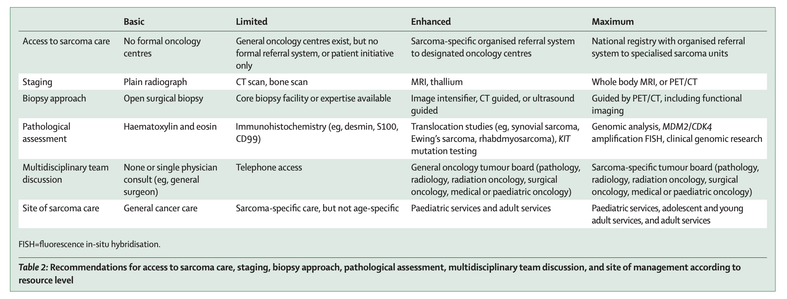

64-year-old woman with a deep thigh mass
- Located within the muscle layer
- Approximately 9 × 7 × 6 cm
- Progressively enlarged over 2 months
- Biopsy was arranged after initial work-up
From diagnostic work-up to the biopsy route
The issue is not only who performs biopsy, but whether biopsy is part of a planned sarcoma pathway.


These features meet classic warning signs for possible soft tissue sarcoma.
References: NICE NG12; López-Pousa et al., SEOM Clinical Guideline of soft-tissue sarcoma, 2016.
No obvious clue for bone involvement or bone metabolism disorder.
No strong signal of high tumor burden or rapid cellular turnover.
Less supportive of infection or marked inflammatory disease.
No abnormal imaging findings at other sites.
No evident distant disease at this stage.
Staging does not name the tumor; it maps the disease and frames the treatment goal.
Reference: López-Pousa et al., SEOM Clinical Guideline of soft-tissue sarcoma, 2016.



Reference: López-Pousa et al., SEOM Clinical Guideline of soft-tissue sarcoma, 2016.
In suspected sarcoma, the biopsy tract may become part of the future surgical field.
Contaminates unnecessary compartments.
Samples necrotic or non-representative tissue.
Larger resection and functional cost.
Reference: López-Pousa et al., SEOM Clinical Guideline of soft-tissue sarcoma, 2016.
| Method | How it works | Strengths | Limitations / cautions | Typical role |
|---|---|---|---|---|
| FNA Fine needle aspiration |
Uses a thin needle to aspirate cells for cytology. | Minimally invasive. | Lower diagnostic accuracy; higher risk of non-diagnostic or non-representative samples. | Not recommended as routine biopsy for suspected soft tissue sarcoma. |
| CNB Core needle biopsy |
Uses a larger needle to obtain tissue core samples, often image-guided. | High accuracy; outpatient local anesthesia; lower complication risk than incisional biopsy. | Accuracy may be lower in some locations or histologies; negative CNB does not always exclude malignancy. | Preferred first-line technique in many suspected sarcoma work-ups. |
| IB Incisional biopsy |
Open surgical incision obtains a larger tissue sample. | More tissue for histology, molecular tests, tissue banking, or difficult diagnosis. | More invasive; incision must be planned along future resection route with careful hemostasis. | Used when percutaneous biopsy is inconclusive or larger tissue is required. |
| Excisional biopsy | Removes the whole lesion. | Can be definitive for selected small superficial lesions. | Not appropriate for large, deep, suspicious masses; should follow imaging. | Limited to superficial tumors <3 cm and away from critical structures. |

References: Traina et al., 2015; Okada, 2016; Lewin et al., 2013; Birgin et al., 2020; Kiefer et al., 2022.
Look at the MRI and choose the route that is more likely to obtain diagnostic tissue.

Is biopsy by an inexperienced local surgeon appropriate?
The concern is separating the diagnostic act from the treatment plan. Referral or pre-biopsy discussion with a sarcoma team is preferred.

What if the sarcoma team was consulted first?
A reasonable model is: sarcoma team plans, local team executes, with complete MRI, staging, route planning, and handoff.
Birgin, E., Yang, C., Hetjens, S., Reissfelder, C., Hohenberger, P., & Rahbari, N. N. (2020). Core needle biopsy versus incisional biopsy for differentiation of soft-tissue sarcomas: A systematic review and meta-analysis. Cancer, 126(9), 1917-1928. https://doi.org/10.1002/cncr.32735
Kiefer, J., Mutschler, M., Kurz, P., Stark, G. B., Bannasch, H., & Simunovic, F. (2022). Accuracy of core needle biopsy for histologic diagnosis of soft tissue sarcoma. Scientific Reports, 12, Article 1886. https://doi.org/10.1038/s41598-022-05752-4
Lewin, J., Puri, A., Quek, R., Ngan, R., Alcasabas, A. P., Wood, D., & O'Sullivan, B. (2013). Management of sarcoma in the Asia-Pacific region: Resource-stratified guidelines. The Lancet Oncology, 14(12), e562-e570. https://doi.org/10.1016/S1470-2045(13)70475-3
López-Pousa, A., Martin Broto, J., Martinez Trufero, J., Sevilla, I., Valverde, C., Alvarez, R., Carrasco Alvarez, J. A., Cruz Jurado, J., & Garcia del Muro, X. (2016). SEOM Clinical Guideline of management of soft-tissue sarcoma (2016). Clinical and Translational Oncology, 18(12), 1213-1220. https://doi.org/10.1007/s12094-016-1574-1
National Institute for Health and Care Excellence. (2026). Suspected cancer: Recognition and referral (NICE guideline NG12). https://www.nice.org.uk/guidance/ng12
Okada, K. (2016). Points to notice during the diagnosis of soft tissue tumors according to the Clinical Practice Guideline on the Diagnosis and Treatment of Soft Tissue Tumors. Journal of Orthopaedic Science, 21(6), 705-712. https://doi.org/10.1016/j.jos.2016.06.012
Traina, F., Errani, C., Toscano, A., et al. (2015). Current concepts in the biopsy of musculoskeletal tumors: AAOS exhibit selection. The Journal of Bone and Joint Surgery. American Volume, 97(2), e7. https://doi.org/10.2106/JBJS.N.00661